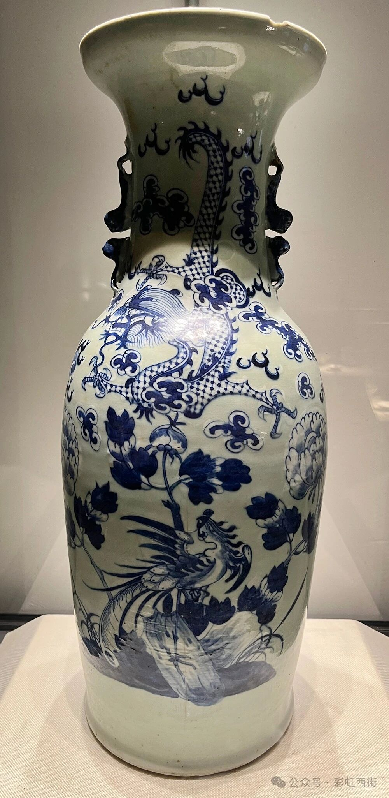
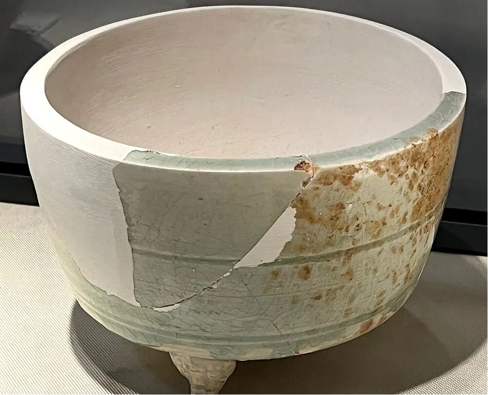
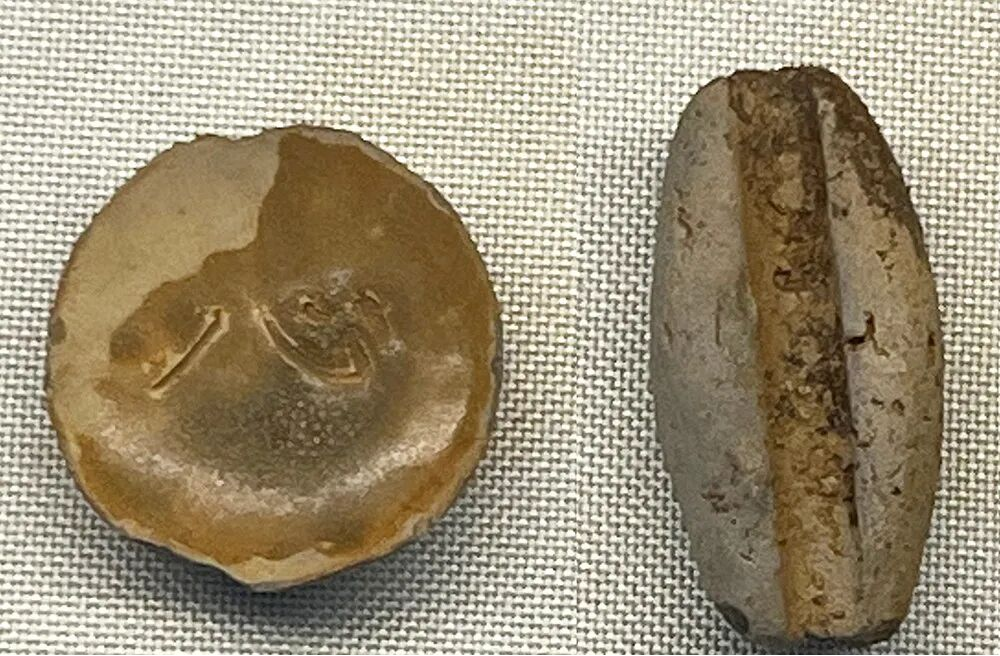
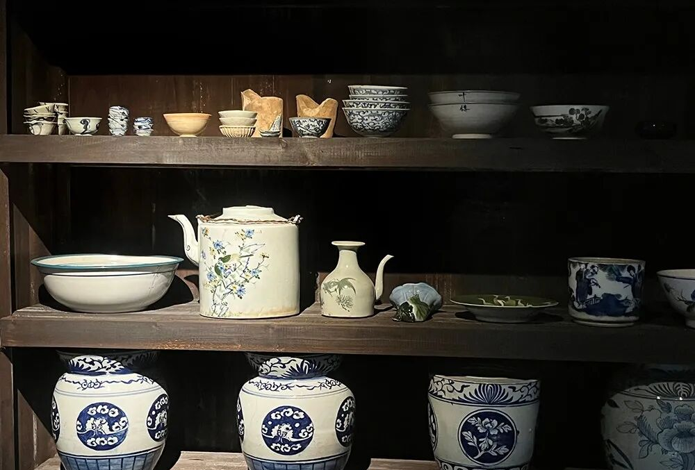

动态 · 守护
🔥 窑火节 5.1-5.3
开窑仪式、陶艺体验
开窑仪式、陶艺体验
📢 志愿者招募
文物保护讲解组
文物保护讲解组
🏺 研学营报名
暑期少年考古营
暑期少年考古营
文物保护动态、美食节资讯、最新活动在此发布，让心动变行动。
沩山古八景（图片合集）
 洞天春晓
洞天春晓
 摺经流水
摺经流水
 檐廊艳夏
檐廊艳夏
 荷池秋荠
荷池秋荠
 山亭赋雪
山亭赋雪
 灵龟故石
灵龟故石
 仙女羞陽
仙女羞陽
 龙脊高岗
龙脊高岗
代表性瓷器馆藏
醴陵窑代表性瓷器图片（点击可看全图）：

清代 青花龙凤呈祥瓷瓶
清宣统元年（公元1909年）

元代 青白瓷三足炉
钟鼓塘窑址出土

五代 “心”字青瓷小盏
毛家岭窑址出土
瓷器样品间

窑厂内烧制的成品瓷器样品间。明清时期，醴陵窑沩山窑区各大窑厂以生产青花瓷碗为大宗，此外，瓷器贸易商人会根据需要订烧各类瓷器，瓷器样品间提供各种不同瓷器形制、纹饰、釉色等以做参考。
🏺
学术与考古价值
- ● “活辞典”：醴陵窑陶瓷发展历史是中华陶瓷史的缩影
- ● 釉下五彩瓷发源地：1905年熊希龄考察后在此创制
- ● 考古新发现：2025年湖南省文物考古研究院联合醴陵窑管理所对枫树坡进行考古发掘，取得新发现
- ● 完整产业链遗存：从采泥、炼泥、制坯、绘画、烧窑到运输的全流程遗迹保存完好
🌱
乡村振兴成果
沩山振兴之路
- ▸ 2017年：启动"文物保护利用助推精准扶贫"的复兴计划
- ▸ 理念：尊重历史，修复古建，适度开发，让纯朴成为最动人心弦的力量
- ▸ 成效：外出务工村民纷纷回归故乡
- ▸ 产业融合：乡村游、生态游、文旅游三位一体发展
- ▸ 活动品牌：首届醴陵窑美食节（2024年）成功举办
- ▸ 游客增长：2023年五一游客超8万人，持续攀升
📰
新闻报道与媒体关注
醴陵新闻网：“小南京”深度报道，讲述沩山从繁华到沉寂再到复兴的故事
搜狐：深山小馆揭秘东方魔法——醴陵窑沩山陶瓷博物馆
2025年：湖南省文物考古研究院枫树坡考古新发现引发学界关注
湖南日报：湖南日报《文化中国行·时光里的古村落》系列:《沩山村：窑火不灭，往事千年》